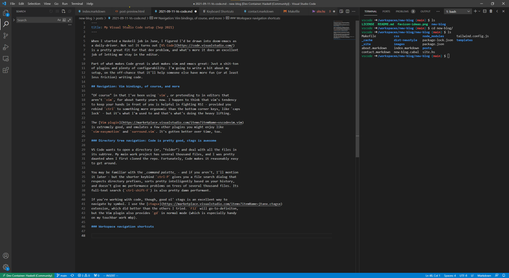

When I started a Haskell job in June, I figured I’d be drawn into doom-emacs as a daily-driver. Not so! It turns out VS Code is a pretty great fit for that dev problem, and what’s more it does an excellent job of letting me stay in the editor.
Part of what makes Code great is what makes vim and emacs great: Just a shit-ton of plugins and plenty of configurability. I’m going to write a bit about my setup, on the off-chance that it’ll help someone else have more fun (or at least less friction) writing code.
Navigation: Vim bindings, of course, and more
“Of course” in that I’ve been using vim, or pretending to in editors that aren’t vim, for about twenty years now. I happen to think that vim’s tendency to keep your hands in front of you is helpful in fighting RSI - provided you rebind ctrl to something more ergonomic than the bottom corner keys, like caps lock - but it’s what I’m used to and that’s what’s doing the heavy lifting.
The Vim plugin is extremely good, and emulates a few other plugins you might enjoy like vim-easymotion and surround.vim. It’s gotten better over time, too.
Directory tree navigation: Code is pretty good, ctags is awesome
VS Code wants to open a directory (er, “folder”) and deal with all the files in its subtree. My main work project has several thousand files, and I was pretty daunted when I first cloned the repo. Fortunately, Code makes it reasonably easy to get around.
You may be familiar with the command palette - basically contextual text search across literally every installed VS Code command - but the shorter keybind ctrl-P gives you a file search dialog that respects directory prefixes, sorts pretty intelligently based on your history, and doesn’t give me performance problems on trees of several thousand files. Its full-text search (ctrl-shift-F) is also pretty damn performant.
If you’re working with code, though, good ol’ ctags is an excellent way to navigate by symbol. I use the ctagsx extension, which did better than the others I tried. F12 will go-to-definiton, but the Vim plugin also provides gd in normal mode (which is especially handy on my touchbar work mbp).
Workspace navigation shortcuts
One of my goals with any editor or IDE is to minimize the amount of times I have to grab the mouse or flip to a different window. Code helps by providing an in-workspace terminal - and I’m thrilled that in $newjob I’m rekindling my relationship with the command line - which lets me set things up like this:

There’s an awful lot I can get done between the editor and the terminal. But navigating fluidly between them is a mild pain in the ass - until I set a few keyboard shortcuts.
Briefly, what I’m trying to do is follow the vim-style hjkl navigation pattern, only between the editor and the terminal. I have ctrl mapped to caps lock, so I decided on ctrl-shift as a modifier set that doesn’t require too much hand movement. I set:
View: Focus First Editor Group ctrl-shift-H when terminalFocus
Terminal: Focus Terminal ctrl-shift-L when editorFocusThat lets me (mostly) hop back and forth between editor and terminal really quickly, which is especially good if I’m running a repl and editing code at the same time (as just one example). Twenty-one years after getting starry-eyed visions of the magic of lisp and the repl’s quick feedback, I’ve found a way to make it work. (Although not in lisp, and not in emacs. Their loss!)
There is an awful lot of potential in remapping shortcuts, too. I can imagine navigating the tree-view sidebar with ctrl-shift-J/K, opening and closing subtrees with vim’s z-commands for text folds, and so on. I think this’ll be another project. Some of these commands aren’t bound by default, so the extra keybinds are unlocking new capabilities, but it’s more about being able to walk the whole workspace using a familiar navigation metaphor.
Haskell, though
So, just having good navigation facilities and easy terminal access is a pretty good start if you want to write Haskell for a living. But, we can do more. (Is “more” necessarily “better”? Well, a number of my colleagues get by with just vim and a terminal… and a good fulltext search tool, and probably some other stuff.)
Anyway, Code has plenty of Haskell-related plugins to help out.
Hoogle
Hoogle is a search engine for Haskell’s packages, which lets you search by name (valuable if you’ve ever tried to google <$>) or by type signature (“what the hell do I do with one of these?”). The Hoogle plugin lets you search from within VS Code, either by popping up a prompt or by searching for selected text. (A habit I’m developing is to try go-to-definition with ctags, then Hoogle the identifier if it doesn’t pop up any hits. Either it’s in the codebase, or it’s imported, right?)
Of particular note to me, and I dare say to more than zero of the people who might read this, is that the Hoogle plugin can point to an internal server - one that’s indexing the company’s codebase as well as the imported packages. That’s a simple matter of configuration, and so far as I’m aware the plugin won’t yet let you search both.
It does break the editor-and-terminal model by opening a new tab in a browser, but at least does you the courtesy of focusing the browser (whence you can, presumably, alt-tab back once you’ve found what you wanted). I wonder if this’d be a good application for something like lynx.
Haskell syntax
Most of us want syntax highlighters now that they’re generally available. This one does the job.
Haskell language server
My work computer doesn’t have the juice to run hls on a monolithic codebase, and I haven’t had the chance to really play with it on my personal machine, but it’s available if you want it.
Haskell-linter
hlint catches a number of errors and, uh, stylistic deviations, and runs much faster than a full compile. This plugin integrates it with VS Code, and if you’re running vim emulation you can hover a symbol with gh. I have found that on multiline suggestions, accepting the hlint suggestion through Code’s UI will often just clobber your code, so it pays to read the warning text and refactor by hand. (Probably a better learning experience, anyway.)
Haskell-ghcid
If you want more than hlint but less than hls, ghcid will incrementally build your Haskell code when you save source files and display any errors that pop up. This plugin integrates that with VS Code, and turns those console errors into red squiggles in an editor pane.
Indent-rainbow
Haskell is, famously, a (mostly) indentation-sensitive language. This is basically good but occasionally frustrating, particularly in long constructs. (“You shouldn’t have long constructs!” Yes, yes.) The indent-rainbow extension does more or less what it says on the tin and marks various levels of indentation with coloured vertical stripes. It’s a helpful visual cue.
Github
Devs, of course, don’t just write code all day. Another significant part of my workday is Github, and there are a few helpful plugins available for that, too.
GitLens
GitLens does a lot more than what I do with it, but what it does for me with zero effort spent learning is enough - it provides a bunch of helpful file and line annotations for what was modified, when. I have, um, some instincts around old code, and being able to just look at the editor and find out whether the function I’m messing with was last changed three weeks ago or a year and a half ago is helpful.
Github Pull Requests
This is a big deal for me. I find github’s web UI for pull requests annoying to navigate, and in general I try to stay inside VS Code as much as I can (with #pets or #food on work slack in the other monitor). I’ve gone so far as to crawl the github REST API looking for ways to list, reply to, and close comment threads with a CLI app in mind.
No need, the github PR extension puts everything in Code.
Do you struggle to remember to check out repos before reviewing them? Leave comments only on what’s in the diff and forget to check context? No worries, this extension has your back. It’s pretty great.
Devcontainers
I’d be remiss if I didn’t mention this feature. Mostly I use VS Code for work, because that’s where I do most of my programming, but I do write the occasional line of code for fun, and these days that’s Haskell. But my personal computer is set up more for gaming and a bit of digital art than for coding, and runs Windows.
Not the easiest Haskell setup, right? What do?
VS Code can attach to Docker containers quite seamlessly and run, say, an Ubuntu image with Haskell, cabal, hls, and all the goodies attached to a quite normal-looking directory in a Windows filesystem. It’s fucking great… provided someone’s done the work of creating a container for you (which, in this case, someone has).
Github has productized this, of course. Anyway, it’s a pretty neat option.
What’s next?
I feel like I’ve gotten a bit below the surface layer of what’s possible with VS Code, but there’s plenty more to be had.
First off, I like the idea of extending the vim metaphor through keyboard navigation shortcuts. I like to turn off navigation views - give me more space on the screen for useful text - so switching between terminals is something I generally don’t bother with. ctrl-shift-J/K to cycle them seems like fun, as does similar navigation through the tree-view widgets, z-command manipulation of tree views as I mentioned above, and so on. There’s a lot of ways to make that better, or at least better for me.
I also have a few annoyances I feel like I should be able to fix.
For one thing, it bugs me that I can’t (or haven’t figured out how to) get Code to load with an open terminal, on the right, 80 columns wide. Starting out with a consistent layout feels like table stakes. I bet there’s a way.
Another very specific thing that annoys me is how, when I’m writing a record in Haskell, putting a newline before the { in
data Foobar = Foobar |{ }(where | represents the cursor) gives me
data Foobar = Foobar
{
|
}instead of
data Foobar = Foobar
{ |
}I think this one is a relatively small but not straightforward change to the Haskell syntax plugin, I might give it a shot and see what I can do.
I am for sure not done with this topic.
So, you like VS Code?
For CLI-centric Haskell work, yes, I really do. The tooling support is decent, and fits well with the workflows I’ve generally seen and adopted in Haskell. I might change my mind later; I’m still pretty new to writing Haskell in prod and for a living.
As a generic “smart editor” / plugin-driven IDE, yeah, it’s pretty good. I don’t have any real experience using it outside the Haskell space except for a tiny bit of noodling with CSS and Makefiles. I’ve heard good things from others, but it’s hard to vouch for without direct experience.
What I will say is that if I ever make a career out of .net development again, I’m going back to full-fat Visual Studio and trying to do some of the “vim movement metaphor” stuff there that I’ve done in Code. VS by itself is decent for writing C# or F#; VS plus ReSharper plus especially NCrunch is fuckin’ magical. VS Code doesn’t yet, to my knowledge, have anything to match that combination. (Haskell is less dependent on red-green-refactor TDD for quick feedback, at least to my mind so far. Ask me again in six months.)